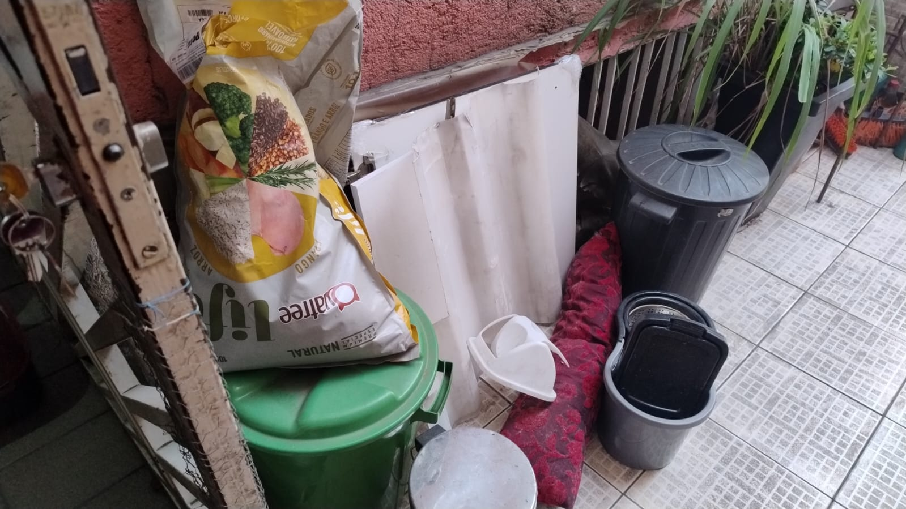
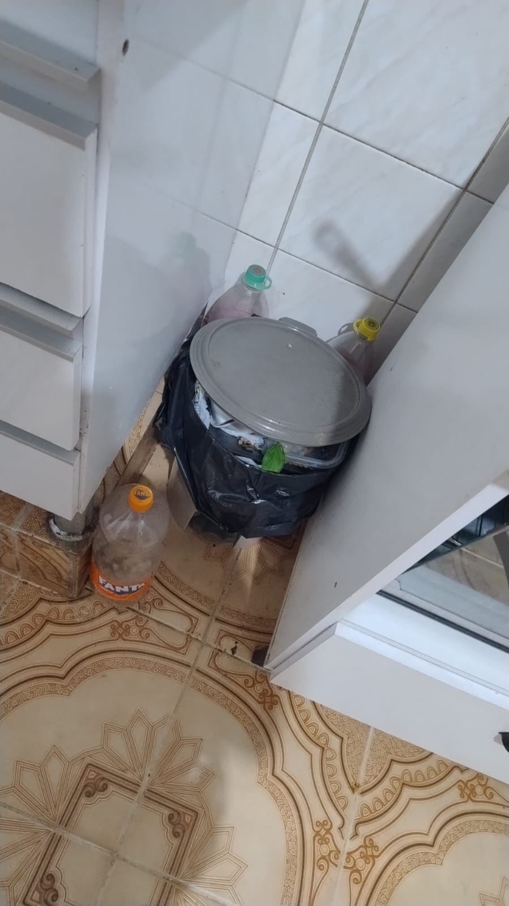
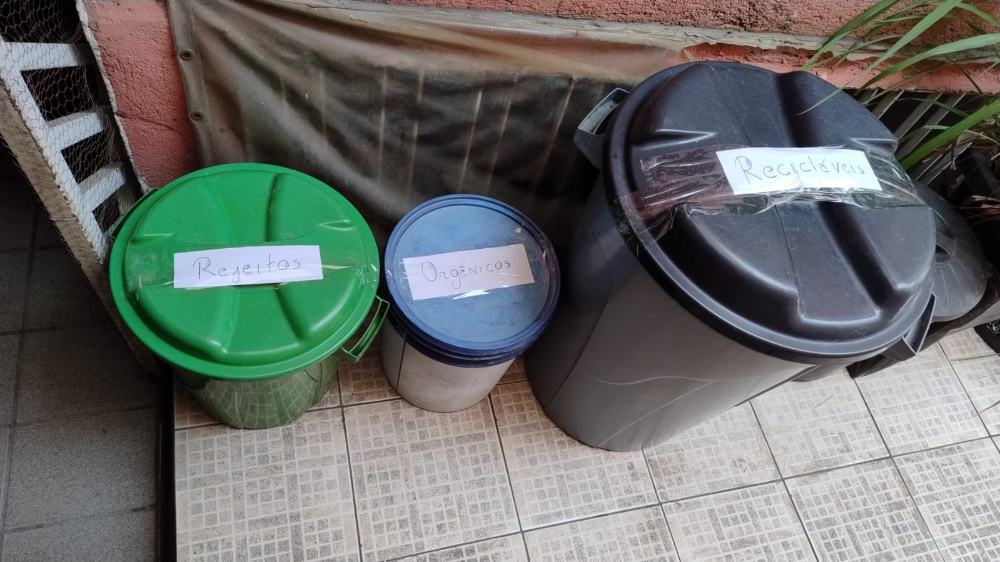
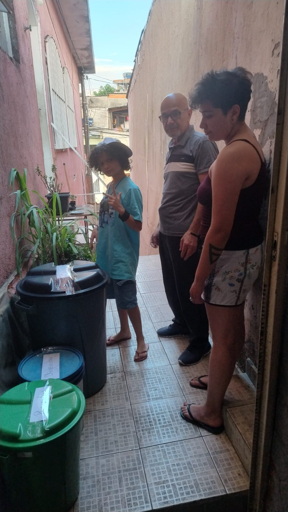
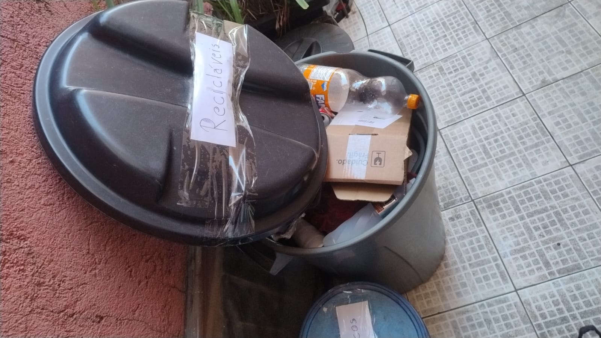
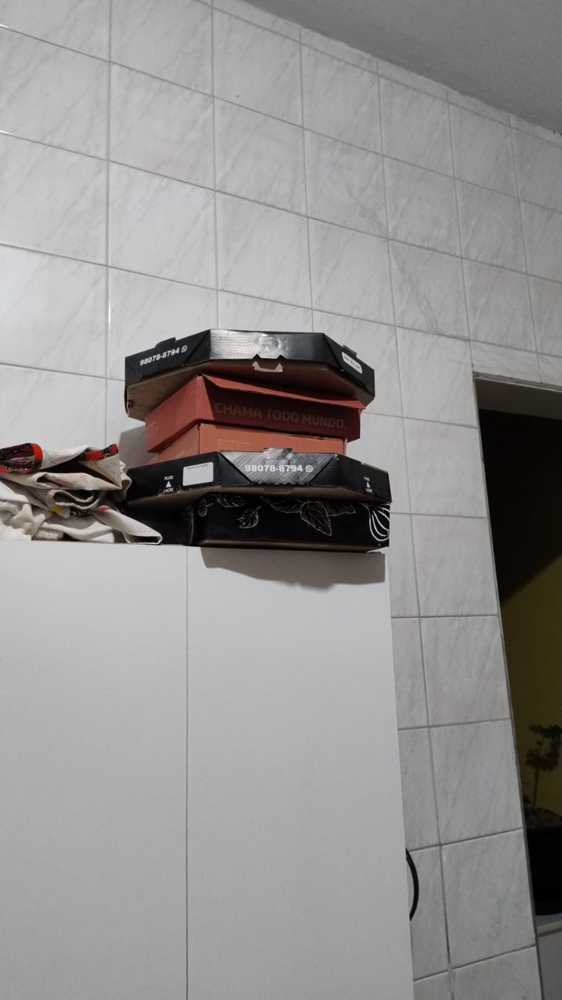
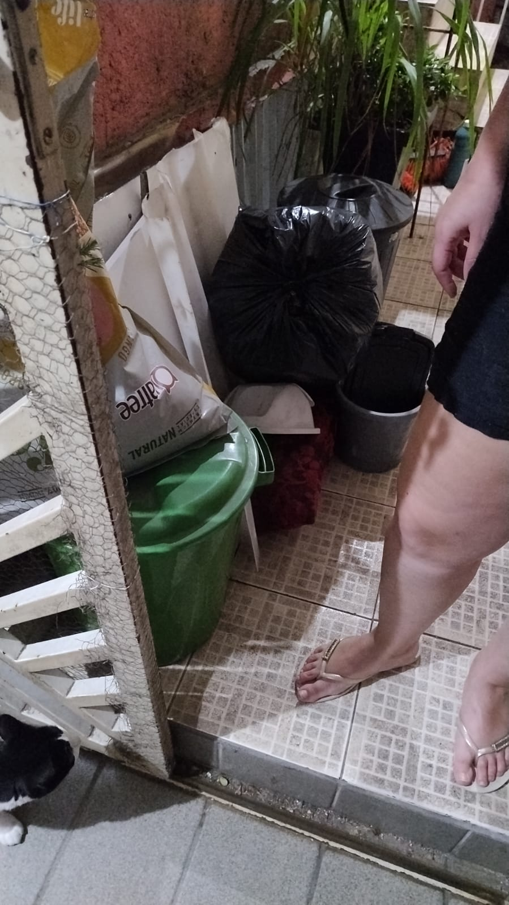
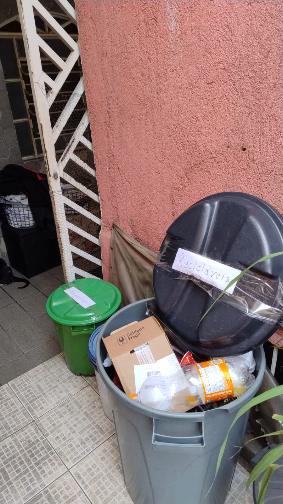

Sobre a intervenção
Este guia foi criado para apoiar moradores na separação e destinação correta de resíduos domésticos, usando tecnologia simples e acessível.
Objetivo
Facilitar o acesso às informações sobre descarte correto por meio de uma página digital, QR Code, orientação presencial e sinalização no espaço de descarte.
ODS relacionada
ODS 3 — Saúde e Bem-Estar, com foco em saúde pública, e ODS 15 — Vida Terrestre, com foco na redução de impactos ambientais e na proteção do solo e do ambiente.
Relação com ADS
A intervenção utiliza uma solução digital simples em HTML, com organização de conteúdo, navegação, checklist e QR Code para ampliar o acesso da comunidade às informações.
Por que descarte correto também é saúde pública?
Quando os resíduos são misturados ou descartados em locais inadequados, podem causar mau cheiro, atrair insetos, dificultar a limpeza do espaço comum e prejudicar o reaproveitamento de materiais recicláveis. A separação correta ajuda a manter o ambiente mais limpo, organizado e seguro para todos.
Como separar os resíduos
Use esta tabela como referência rápida para decidir onde cada resíduo deve ir.
| Categoria | Exemplos | Orientação |
|---|---|---|
| Recicláveis | Papel, papelão, plástico, garrafas PET, latas, embalagens limpas e vidro. | Separar limpos e secos sempre que possível. Não misturar com restos de comida ou lixo de banheiro. |
| Orgânicos | Cascas de frutas, restos de alimentos, borra de café e resíduos de preparo de comida. | Descartar em saco separado e retirar com frequência para evitar mau cheiro e insetos. |
| Rejeitos | Papel higiênico, fraldas, absorventes, esponjas sujas, bitucas e resíduos sem possibilidade de reciclagem. | Separar do reciclável e manter bem fechado para preservar a higiene do ambiente. |
| Resíduos especiais | Pilhas, baterias, óleo de cozinha, lâmpadas, medicamentos vencidos, cabos e pequenos eletrônicos. | Não descartar no lixo comum. Procurar pontos de entrega voluntária, estabelecimentos participantes ou serviços indicados pela prefeitura e entidades responsáveis. |
Onde descartar corretamente em São Paulo
Antes de sair, confirme horário, endereço e tipo de material aceito nos canais oficiais.
Coleta seletiva
Consulte os dias e horários da coleta seletiva no seu bairro. Separe recicláveis como papel, papelão, plástico, vidro e metal conforme a orientação municipal.
Ecopontos
Os Ecopontos recebem materiais como entulho em pequeno volume, grandes objetos, poda de árvore e recicláveis. Não são indicados para lixo orgânico ou hospitalar.
Pilhas, baterias e eletrônicos
Para pilhas, baterias, celulares, cabos e eletrônicos, procure Pontos de Entrega Voluntária específicos. ABREE e Green Eletron ajudam a localizar pontos por CEP ou região.
Óleo de cozinha, vidro e medicamentos
O óleo usado deve ser armazenado em garrafa fechada e levado a ponto de coleta. Vidros devem ser embalados com cuidado. Medicamentos vencidos devem ser entregues em farmácias ou pontos autorizados.
Dica: anote os pontos próximos à comunidade e compartilhe no grupo dos moradores.
Checklist rápido para os moradores
Marque os itens para conferir se o descarte está sendo feito corretamente.
Registros da intervenção
As imagens mostram o diagnóstico do espaço, a organização dos recipientes e a orientação realizada com a comunidade.








Acesso por QR Code
será inserido aqui
Como usar na intervenção
Após publicar esta página no GitHub Pages, gere o QR Code com o link final e substitua este espaço pela imagem do QR Code. O ideal é imprimir o código e fixar próximo ao espaço de descarte, para que os moradores possam consultar o guia pelo celular.
Sugestão: salve a imagem do QR Code como assets/qrcode.png e troque o bloco acima por uma imagem no HTML.
Mensagem final
Separar corretamente os resíduos é uma atitude simples, mas com impacto coletivo. Quando cada morador sabe onde descartar cada material, a comunidade fica mais limpa, organizada e consciente.